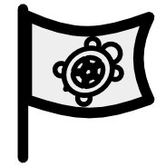
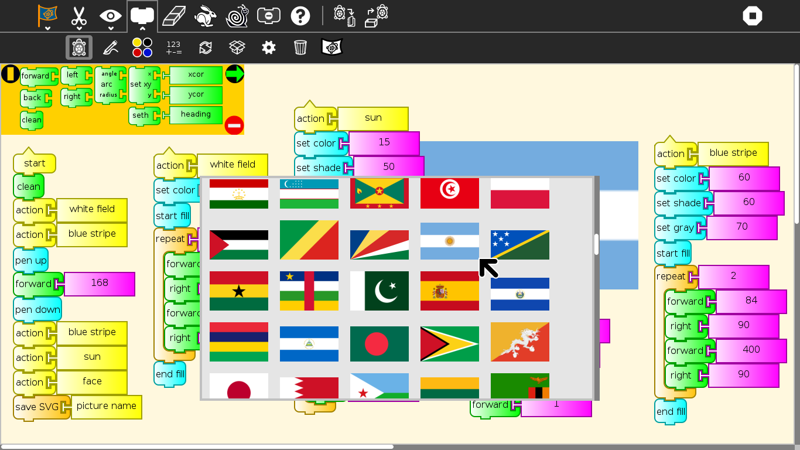
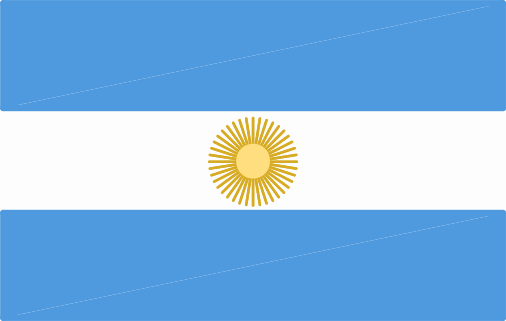

Turtle Flags¶


Turtle Flags presents more than 200 challenges to the learner that must be completed using basic Logo-blocks. The challenges are based on national flags.
Turtle Flags is a fork of Activities/Turtle Confusion that presents 40 shape challenges to be programmed by moving the Logo turtle.


On the left, the Argentine flag; on the right, a Turtle Art reproduction
Additional features:
You can import challenges from the Sugar Journal (save them as an image file)
You can save your results as: (1) a Turtle Art program; (2) a UCB Logo project; or (3) a PNG image
You can overlay Cartesian and polar coordinate grids
Additional blocks can be added through the Turtle Blocks plugin mechanism
Where to get Turtle Flags¶
Turtle Flags activity is available for download from the Sugar Activity Library: Turtle Flags
The source code is available on GitHub.
How to play Turtle Flags¶
Click on the flag button on the palette toolbar.
Select a flag from the flag thumbnail-view (Shown below).
Use blocks from the various palettes to instruct the Logo turtle to replicate the flag.


Please refer to the Activities/Turtle Art pages for basic instructions on how to use the block interface and the details of various toolbars.
The flag challenges are loaded from the Combo Box on the Project (Palette) toolbar. When you select a flag, it will be loaded onto the canvas. When you use the Erase button, the current flag is reloaded.
The available blocks are small subset of the Turtle Block blocks: the basic turtle blocks; a reduced palette of pen and color blocks; some basic arithmetic operators; the repeat block; and the action and box blocks.
The Export palette includes save as Logo; save as image; and save as Turtle Art.
What are the challenges?¶
The 200+ flag challenges are problems of symmetry and geometry which typically can be solved by using a combination of fill and repeat blocks.
Argentina |
United States |
Thailand |
Australia |
Rwanda |
Peru |



An example of a Turtle Art flag (Argentina)
Reporting problems¶
Please report bugs and make feature requests at activity-turtle-flags/issues.
Credits¶
Walter Bender wrote and maintains the code.
Brian Silverman is the first author of Turtle Art.